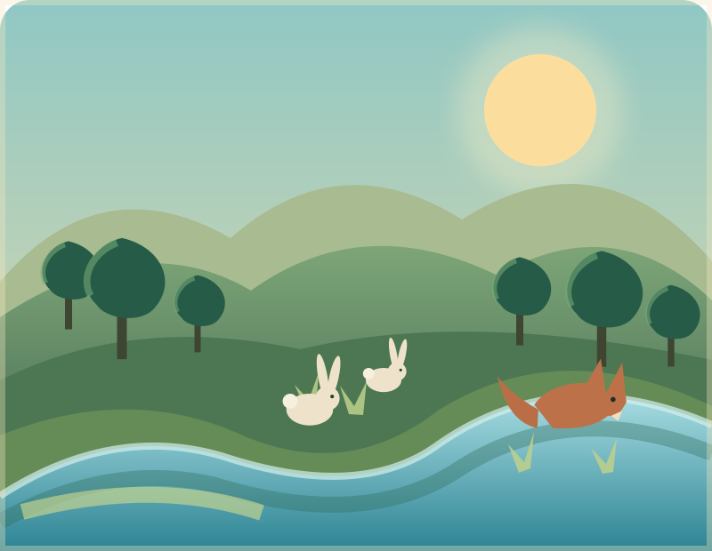

Вход за записване на напредъка
Без вход можеш да играеш, но играта няма да се запише.
Стратегическа игра за живия свят
Една долина.
Всяко решение има последици.
Управлявай водата, тревата, зайците и лисиците. Предвиди как ще се промени природата и запази равновесието за 10 хода.
5 мисии · 10 хода · всяко решение променя долината

Опростен учебен модел на екосистема, а не научна прогноза.
Карта на долината
Избери предизвикателство.
Всяка мисия променя началните условия и природните събития. Един и същ свят, пет различни истории.
Как се играе? Кратки правила
- На всеки ход избираш едно действие: трева, водоем, зайци, лисици или без намеса.
- Преди хода предвиждаш дали водата и популациите ще се увеличат, запазят или намалеят.
- След хода сравняваш прогнозата с резултата в „Дневника на причините“.
Това е опростен учебен модел, а не научна прогноза за истинска екосистема.
Пет предизвикателства
Избери мисия
Всичките пет мисии са достъпни. Започни с първата или избери предизвикателство.
Мисия 1: Първи живот
Цел: и трите вида да оцелеят 10 хода.
Без вход — играта не се записва.
Долината
Без събитиеСъстоянието на долината следва стойностите на показателите.
2. Твоята прогноза
Избери ↑, = или ↓ за всеки показател.
1. Избери действие
Едно действие за всеки ход. Недостъпните действия показват причината.
Добави лисици: действието вече е използвано 2 от 2 пъти в тази мисия.
Още няма избрано действие.
Състояние на екрана
Готово за избор на действие и прогноза.
Графика по ходове
Линиите показват процент от максимума за всеки показател. Задръж върху точка за точния брой.
📓 Дневник на причините
След първия ход тук ще видиш прогнозата си, резултата и защо долината се е променила.
Край на мисията